Lead Generation
Capture inquiries from Facebook, Google, websites, third parties, referrals, and other lead channels.
A large-scale workflow integration designed around the complete lending operation—from lead capture and qualification through document turn-in, credit assessment, approvals, Oracle NetSuite handoff, loan releasing, notifications, scheduling, and management visibility.

The work started from the operational process: where leads originate, who owns each stage, what information is required, how documents move, where approvals happen, and when data must cross into ERP processing.
Lead-to-loan processing spans multiple teams and systems. Marketing sources create inquiries, telesales qualifies them, borrowers submit documents, DBR performs staged credit assessment, approvers review qualified applications, and loan operations completes the releasing process. Without a controlled workflow, ownership and status can become fragmented between boards, messages, files, and follow-ups.
Each stage has defined ownership, status logic, handoff conditions, and exception paths. The design connects CRM activity to downstream operational and ERP actions.
Capture inquiries from Facebook, Google, websites, third parties, referrals, and other lead channels.
Validate incoming data, create CRM records, assign ownership, and trigger round-robin distribution.
Qualify leads, request documents, track completeness, and prepare applications for assessment.
Move qualified applications through staged credit review, compliance checks, decisions, and reprocessing.
Route approved assessments to the approval board, notify the appropriate teams, and prepare ERP handoff.
Generate quotation data, synchronize status, release approved loans, and track final availed or cancelled outcomes.
The architecture separates lead capture, workflow orchestration, operational tracking, document support, and ERP processing while keeping status changes synchronized across the process.
Facebook / Instagram, Google Ads, website forms, referral sources, third parties, and manually entered leads.
Webhook processing, validation, field mapping, routing, notification triggers, synchronization, and activity logging.
Lead management, status tracking, qualification, turn-in, assessment, approvals, queues, ownership, and reporting views.
Approved record handoff, quotation or PN generation, ERP-side processing, and status synchronization toward releasing.
It is an operational workflow model that coordinates people, process rules, information, approvals, notifications, and systems.
Standardizes incoming lead information before it enters the CRM workflow.
Routes new leads to available telesales agents with defined assignment logic.
Provides a visible stage model from initial contact through qualification and review readiness.
Tracks required borrower documents, completeness, corrections, and outstanding items.
Supports multiple assessment levels, compliance checks, approval, decline, and reprocess outcomes.
Moves qualified applications into the formal review and approval stage with accountable ownership.
Separates incomplete, declined, remarketing, and executive-decline scenarios into controlled next actions.
Triggers operational and client communications from relevant workflow events.
Coordinates meetings, reminders, follow-ups, and calendar-driven next actions.
Creates shared visibility over source, owner, status, priority, next action, and current stage.
Defines the controlled movement of approved records to Oracle NetSuite and the synchronized return of quotation status.
Provides management views for pipeline status, bottlenecks, exceptions, turnaround, and operational follow-up.
The screenshots below are organized in the same order as the business process so the case study reads as one connected system rather than a collection of unrelated interfaces.
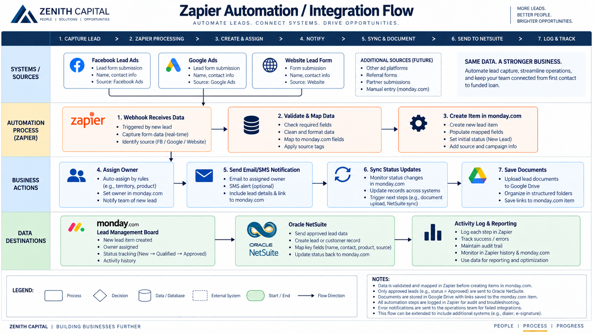
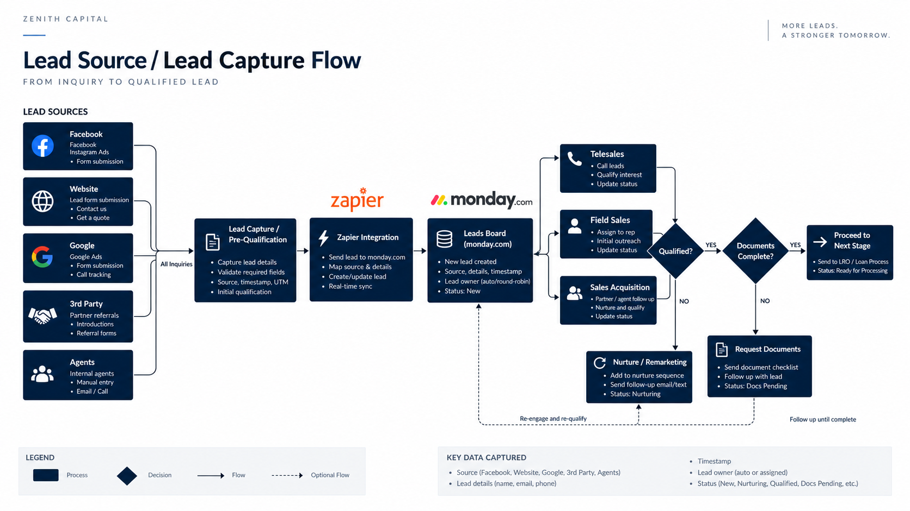
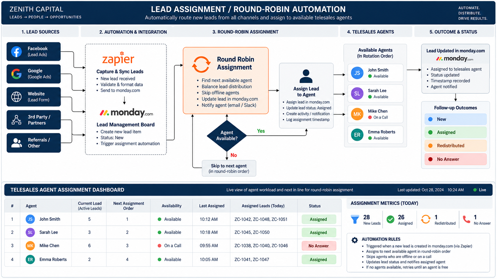
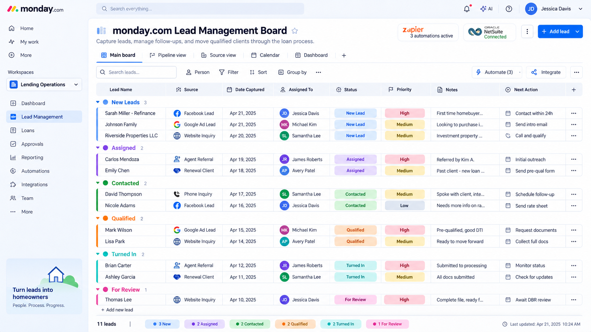
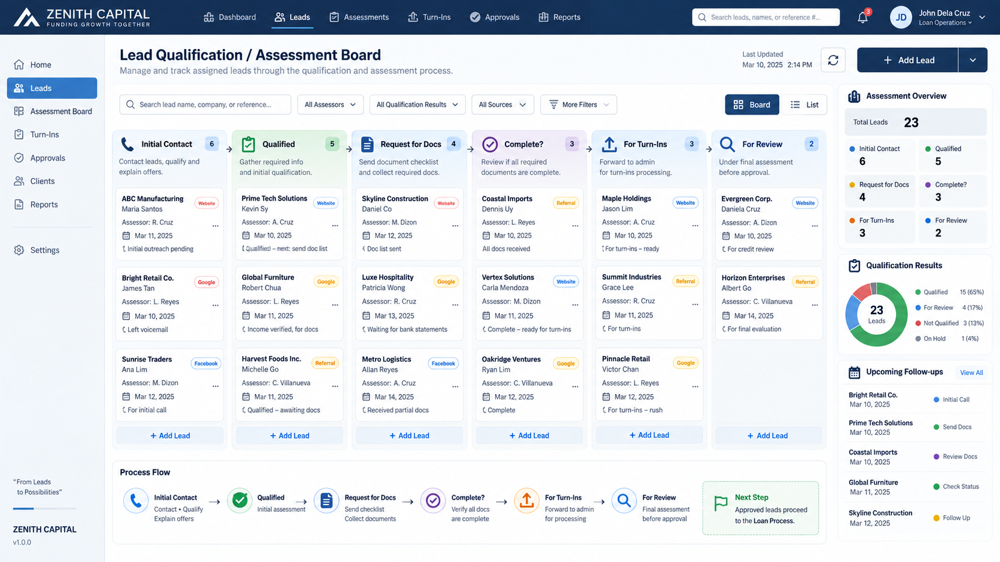
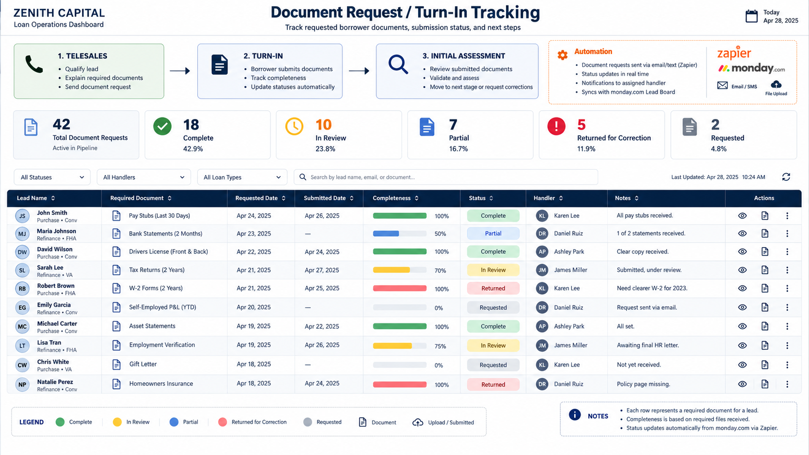
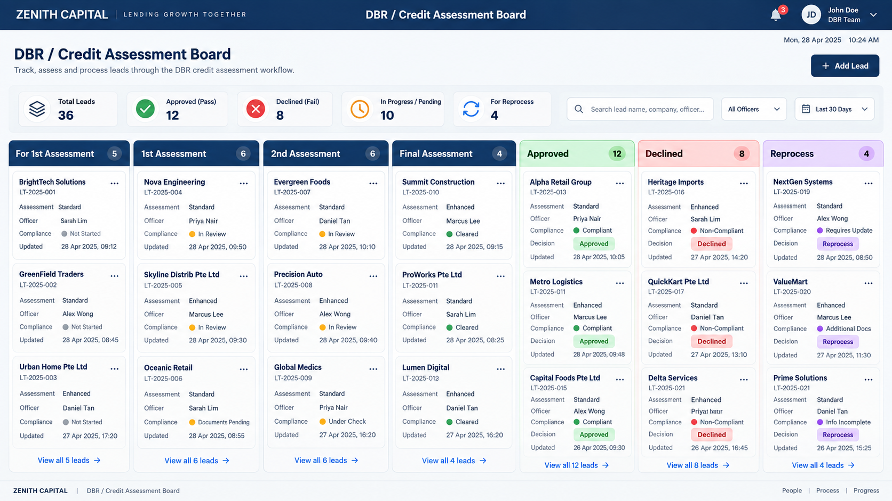
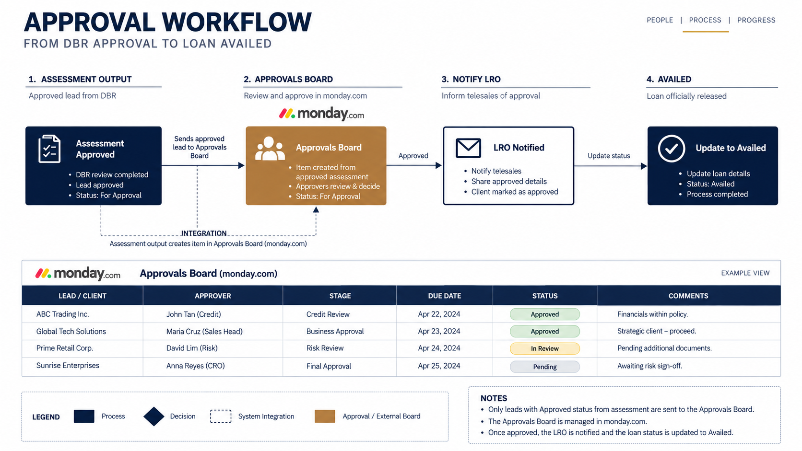
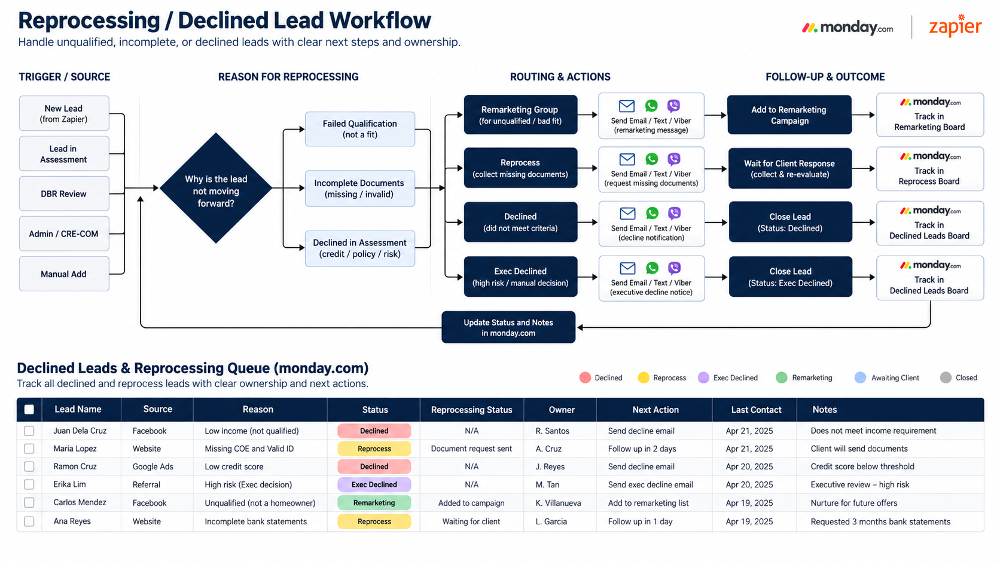
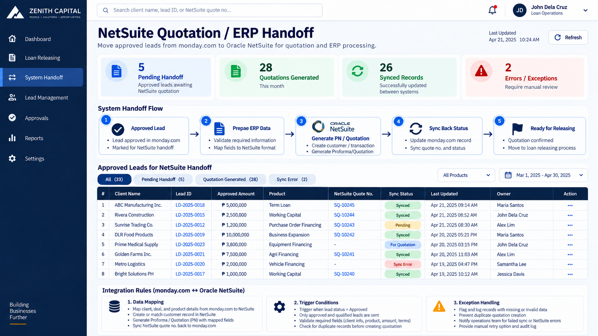
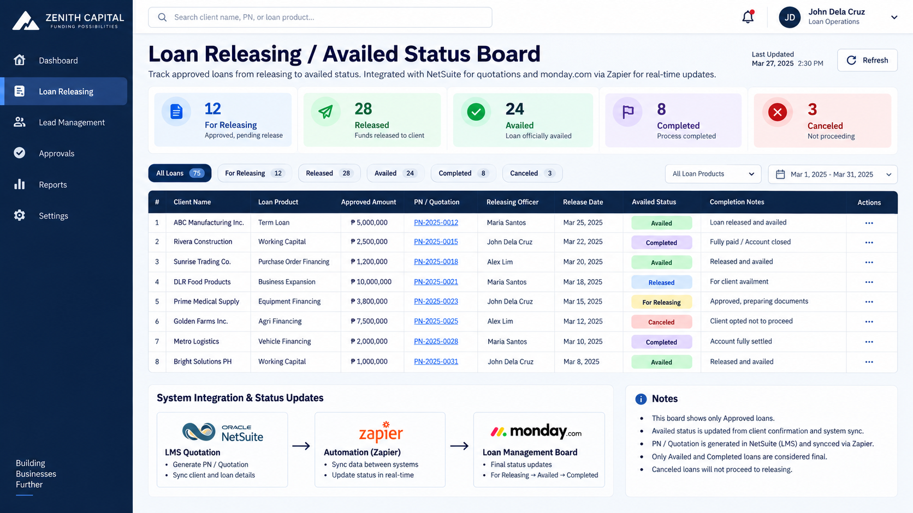
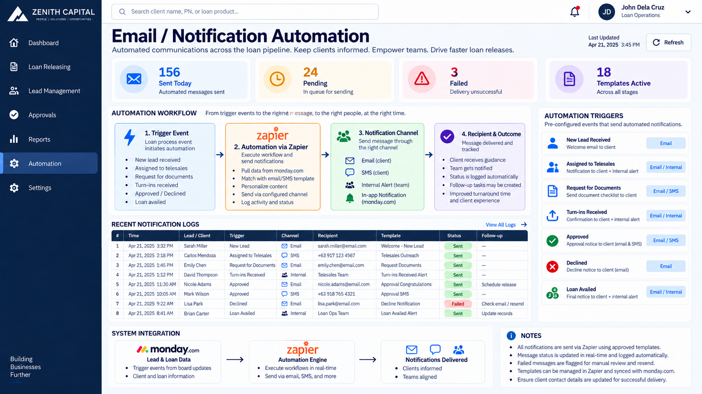
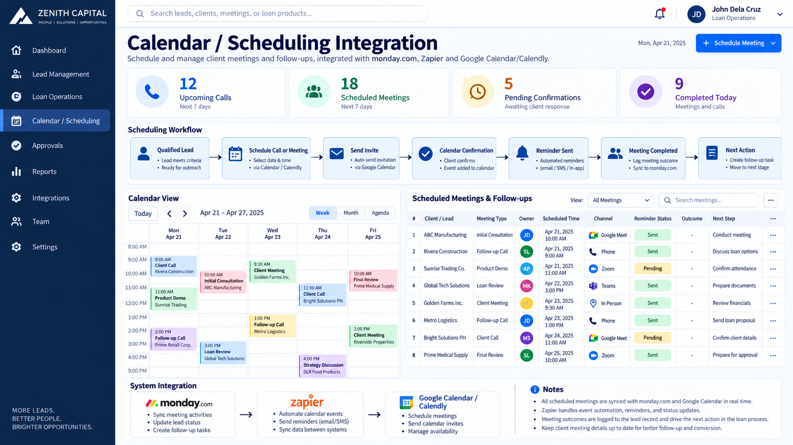
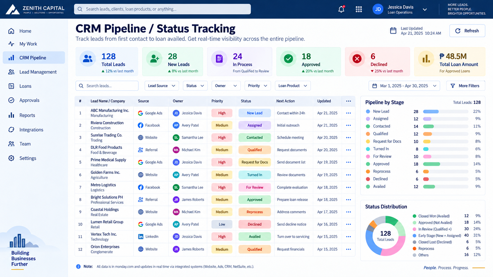
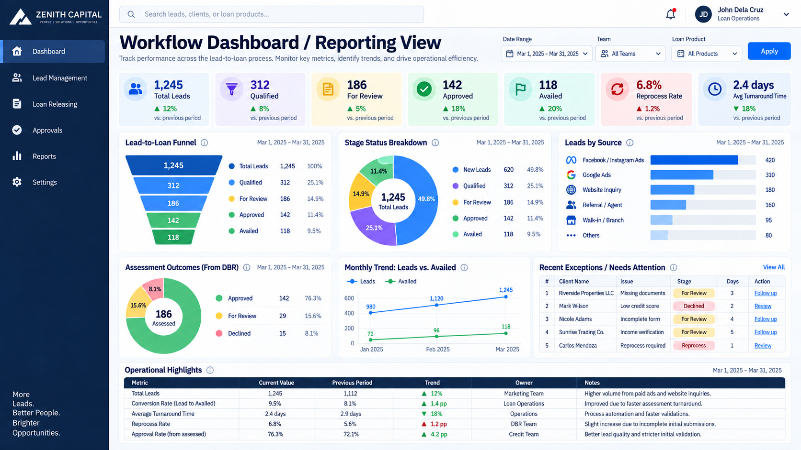
No invented ROI or performance claims—only the operational value directly supported by the workflow design.
Creates a shared view of where a lead or loan sits, who owns it, and what must happen next.
Standardizes assignment and handoff logic across lead capture, qualification, assessment, and approvals.
Gives incomplete, declined, reprocess, and remarketing cases defined next steps instead of ad hoc handling.
Connects CRM-side activity with ERP-oriented quotation and releasing processes without treating each system as an isolated silo.

Integrated business operations across multiple functional modules.
View Project →
Structured document control, records visibility, workflow, and secure access.
View Project →
Complete hardware lifecycle tracking from issuance through maintenance and return.
View Project →Workflow design, CRM/ERP integration, automation, systems implementation, and technology operations.